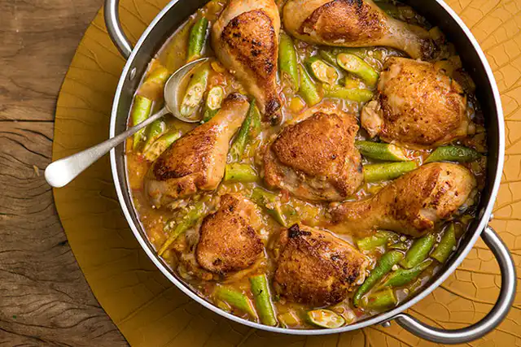

Receitas Recentes

Frango com Quiabo
Frango com Quiabo é um prato típico da culinária brasileira, preparado com pedaços de frango cozidos junto a quiabo, cebola, alho, tomate e temperos como pimentão e cominho. O prato é cozido até o frango ficar macio e o quiabo bem dourado, resultando em um saboroso e suculento ensopado. Ideal para ser servido com arroz e feijão.
Ver Detalhes